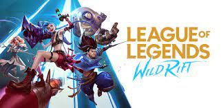

I'm not a sports person, I prefer staying at home rather than playing outside. as a result, I discovered this games and played them when I was bored or on my vacant time.

Valorant is a team-based first-person hero shooter set in the near future.Players play as one of a set of Agents, characters designed based on several countries and cultures around the world.In the main game mode, players are assigned to either the attacking or defending team with each team having five players on it. Agents have unique abilities, each requiring charges, as well as a unique ultimate ability that requires charging through kills, deaths, orbs, or objectives. Every player starts each round with a "classic" pistol and one or more "signature ability" charges. Other weapons and ability charges can be purchased using an in-game economic system that awards money based on the outcome of the previous round, any kills the player is responsible for, and any objectives completed. The game has an assortment of weapons including secondary guns like sidearms and primary guns like submachine guns, shotguns, machine guns, assault rifles and sniper rifles. There are automatic and semi-automatic weapons that each have a unique shooting pattern that has to be controlled by the player to be able to shoot accurately.It currently offers 18 agents to choose from. They are Brimstone, Viper, Omen, Cypher, Sova, Sage, Phoenix, Jett, Raze, Breach, Reyna, Killjoy, Skye, Yoru, Astra, KAY/O, Chamber, and Neon.

League of Legends is a multiplayer online battle arena (MOBA) game in which the player controls a character ("champion") with a set of unique abilities from an isometric perspective.[2][3] As of November 2021, there are 157 champions available to play.[4] Over the course of a match, champions gain levels by accruing experience points (XP) through killing enemies.[5] Items can be acquired to increase champions' strength,[6] and are bought with gold, which players accrue passively over time and earn actively by defeating the opposing team's minions,[2] champions, or defensive structures.[5][6] In the main game mode, Summoner's Rift, items are purchased through a shop menu available to players only when their champion is in the team's base.[2] Each match is discrete; levels and items do not transfer from one match to another.[7]
League of Legends: Wild Rift is a multiplayer online battle arena (MOBA) game in the three-dimensional isometric perspective.[7] With a gameplay similar to the League of Legends PC version, the objective of the game is to take down the opposing team's base.[8] To be compatible with mobile devices, Wild Rift received some adaptations, making the game faster compared to the PC version. Its map has been reduced in size, the resuscitation time is shorter, the gold gain is greatly accelerated and the regeneration time has been cut in half. Due to this, while on the PC version a match can last regularly 45 minutes, on the mobile version matches last approximately fifteen minutes.[9] There are currently two different modes: Wild Rift (which covers PVP, ranked, and tournament draft) and ARAM

Minecraft is a 3D sandbox game that has no required goals to accomplish, allowing players a large amount of freedom in choosing how to play the game.[18] However, there is an achievement system,[19] known as "advancements" in the Java Edition of the game, and "trophies" on the PlayStation ports.[20] Gameplay is in the first-person perspective by default, but players have the option for third-person perspective.[21] The game world is composed of rough 3D objects—mainly cubes and fluids, and commonly called "blocks"—representing various materials, such as dirt, stone, ores, tree trunks, water, and lava. The core gameplay revolves around picking up and placing these objects. These blocks are arranged in a 3D grid, while players can move freely around the world. Players can "mine" blocks and then place them elsewhere, enabling them to build things.[22] Many commentators have described the game's physics system as unrealistic.[23] The game also contains a material known as redstone, which can be used to make primitive mechanical devices, electrical circuits, and logic gates, allowing for the construction of many complex systems.[24]